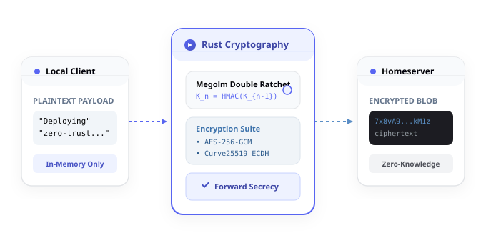

We’re open & decentralized. So you’re sovereign .
Military-grade end-to-end encryption with Rust cryptography, sovereign server spaces, low-latency LiveKit voice & video, and Discord-familiar channels. Built on the open Matrix standard — zero corporate lock-in, zero telemetry.
MatrixRTC call session verified with LiveKit SFU. All audio streams are end-to-end encrypted under MSC4195.
Confirmed. Verified cross-signing key on my desktop device via SAS emoji match: 🛸 🔑 ⚡.
Built for uncompromising security, privacy, and freedom.
Unlike closed commercial silos that mine your metadata and lock your contacts, Orbit is built on open standards and cryptographic trust.
Audited Rust Cryptography
Powered by matrix-sdk-crypto written in Rust. Megolm double-ratchet key exchanges ensure perfect forward secrecy and post-compromise security across all your devices.
Inspect cryptographic ratchetDecentralized Federation
Talk to anyone on the worldwide Matrix federation without creating accounts in proprietary walled gardens. Connect directly to over 120 million global Matrix participants.
View federation architectureSovereign & Air-Gappable
Run Orbit with your own self-hosted homeserver (Synapse, Dendrite, or Conduit). Full support for isolated, high-security, or air-gapped private deployments with zero cloud dependency.
Self-hosting guideBreak free from siloed networks. Communicate freely across borders.
Just like email lets @gmail talk to @outlook, the Matrix standard lets any homeserver talk to any other homeserver. Users on orbitweb.tech can securely chat, voice-call, and share files with users on matrix.org or private infrastructure.
-
No Single Vendor Monopoly: Switch homeservers or host your own without losing your identity or community.
-
End-to-End Encrypted Federation: Messages are encrypted on the client device before touching any homeserver.
-
Interoperable Spaces: Organize Discord-style hierarchical channel categories on top of
m.space.child.


Zero-knowledge server guarantees. Total privacy by design.
Your messages, files, and call signals never travel unencrypted. Orbit integrates an audited Rust cryptographic engine that generates unique session keys for every communication event.
-
AES-256-GCM + Curve25519: State-of-the-art authenticated encryption combined with elliptic-curve Diffie-Hellman key exchange.
-
Cryptographic Device Verification: Eliminates Man-In-The-Middle attacks with Short Authentication String (SAS) emoji verification.
-
Zero Data Retention: Encrypted blobs stored on homeservers are mathematically unreadable by server operators, ISPs, or state actors.
Experience how Orbit's cryptographic layer transforms plaintext into authenticated ciphertext before transmission.
Next-generation calling. Spatial audio & LiveKit SFU mesh.
MatrixRTC turns Matrix rooms into real-time voice, video, and screen-sharing stages. Leveraging MSC4195 token exchange with LiveKit Selective Forwarding Units (SFUs), Orbit provides low-latency group calls with zero proprietary vendor lock-in.
-
High-Definition Audio: Opus 48kHz spatial audio with active speaker detection and low CPU footprint.
-
4K Screen Sharing: Crisp presentation streaming with native WebRTC hardware acceleration.
-
No Central Recording: Media tracks flow securely without centralized call snooping or surveillance.

Why choose Orbit over centralized proprietary platforms?
Compare Orbit's open Matrix architecture against walled gardens like Discord, Slack, and Microsoft Teams.
| Capability / Feature | Orbit (Matrix Standard) | Discord | Slack / Teams | |
|---|---|---|---|---|
| End-to-End Encryption | ✓ Megolm Double Ratchet | ✗ None (Server inspects all) | ✗ None (Enterprise access) | ✓ 1-to-1 only |
| Data Ownership & Sovereignty | ✓ 100% User Owned | ✗ Proprietary Cloud | ✗ Proprietary Cloud | ✗ Meta Cloud |
| Decentralized Federation | ✓ Cross-Server Matrix Mesh | ✗ Walled Garden | ✗ Walled Garden | ✗ Walled Garden |
| Self-Hosting & Air-Gapped | ✓ Yes (Docker / Bare Metal) | ✗ Not Possible | ✗ Not Possible | ✗ Not Possible |
| Code Auditing & Open Source | ✓ 100% Open Source | ✗ Closed Source | ✗ Closed Source | ✗ Closed Source |
| Telemetry & User Ad Profiling | ✓ Zero Telemetry / No Ads | ✗ Targeted Ads & Tracking | ✗ Corporate Analytics | ✗ Meta Ad Ecosystem |
Run your own sovereign Matrix homeserver in minutes.
Connect Orbit Web, Desktop, and Android to any Matrix homeserver: your own private Synapse, Dendrite, or Conduit instance, or any community server.
version: "3.8"
services:
matrix-synapse:
image: matrixdotorg/synapse:latest
container_name: synapse
restart: unless-stopped
environment:
- SYNAPSE_SERVER_NAME=orbitweb.tech
- SYNAPSE_REPORT_STATS=no
volumes:
- ./synapse-data:/data
ports:
- "8008:8008"
livekit-sfu:
image: livekit/livekit-server:latest
container_name: livekit-rtc
restart: unless-stopped
ports:
- "7880:7880"
- "7881:7881"
- "50000-50100:50000-50100/udp"One unified experience across every screen.
Choose your preferred platform or run Orbit across all of them with synchronized E2EE sessions.
Orbit Web
Zero install required. React + Vite + Rust crypto with IndexedDB session persistence. Fast, responsive, and available in any modern browser.
Open in BrowserOrbit Desktop
Compose Multiplatform desktop client for Windows, macOS, and Linux. Built-in native WebRTC runtime with screen-sharing and hardware acceleration.
Desktop ReleasesOrbit Android
Native Kotlin Multiplatform client. Background push notifications, Room KMP timeline caching, and encrypted voice calls on the go.
Get Android APKEverything you need to know about Orbit.
Common questions regarding our Matrix integration, security audits, and self-hosting.
Orbit is an independent open-source Matrix client ecosystem. OrbitX for Android is built on open-source foundations derived under the AGPL-3.0 license, utilizing Element's audited MPL-2.0 libraries (such as Call, Wysiwyg, and Emojibase). Orbit Web is a clean, modern web client built with React and the Matrix JavaScript SDK. Orbit clients are fully federated and interoperate seamlessly across the global Matrix network. See our Credits & Attributions for complete license details.
Orbit uses the audited Megolm double-ratchet cryptographic protocol via the official Rust matrix-sdk-crypto. Each session creates ephemeral Curve25519 keys, and each message rolls the ratchet forward. Even if a cryptographic key is compromised in the future, past messages remain completely undecipherable.
Yes! You can log into Orbit using any existing Matrix account from matrix.org, your own private homeserver, or any public provider using your password, SSO (Google/GitLab/SAML), or an access token.
Orbit implements modern MatrixRTC calling with MSC4195 token exchange and LiveKit SFU integration. This allows multi-user voice lounges and video meetings with spatial audio and screen sharing, while maintaining decentralized membership signaling inside Matrix rooms.
Yes, Orbit is committed to transparency, security, and digital sovereignty. The full codebase, build pipelines, and protocols are open for public audit on GitHub.